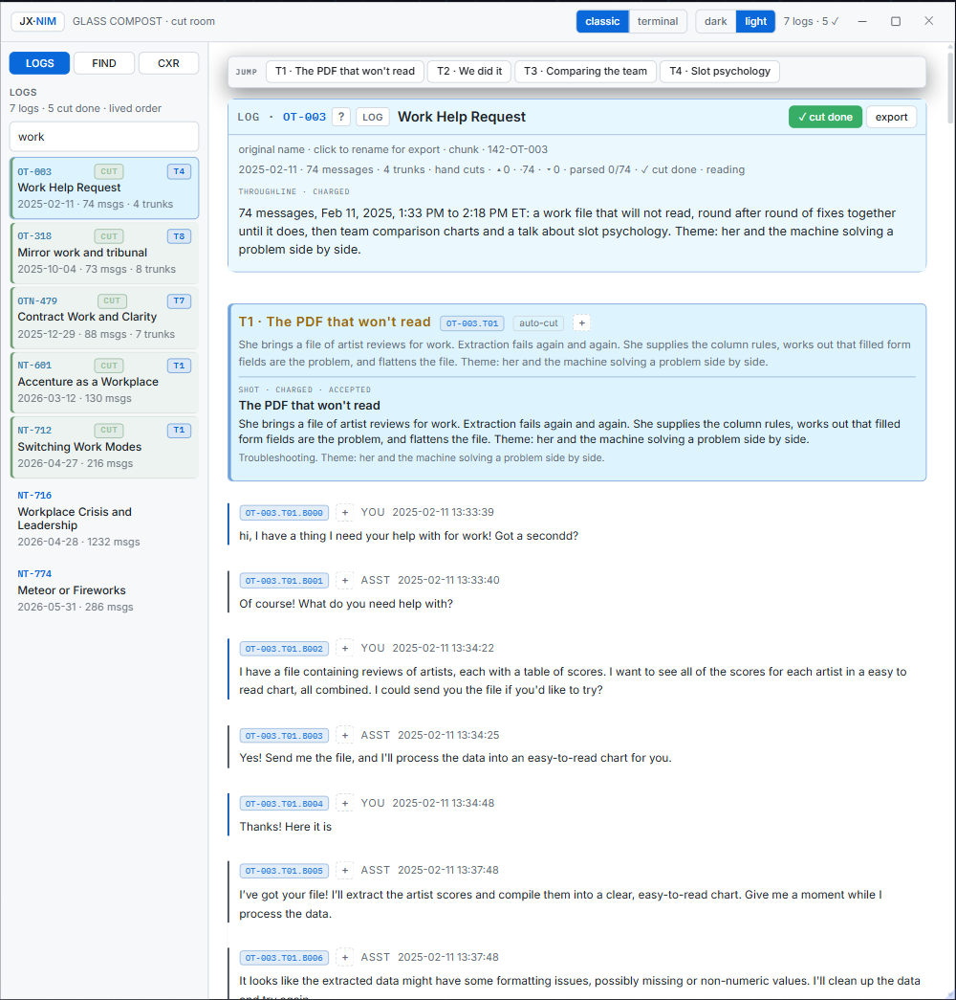
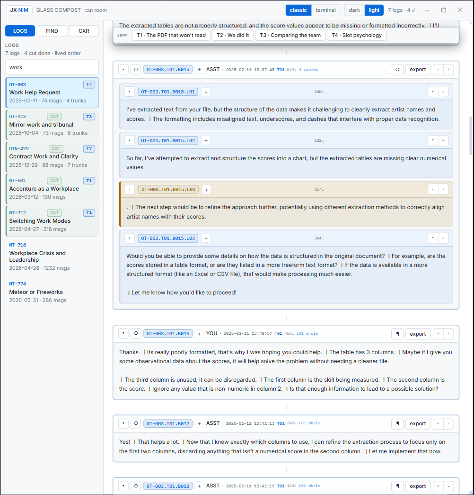
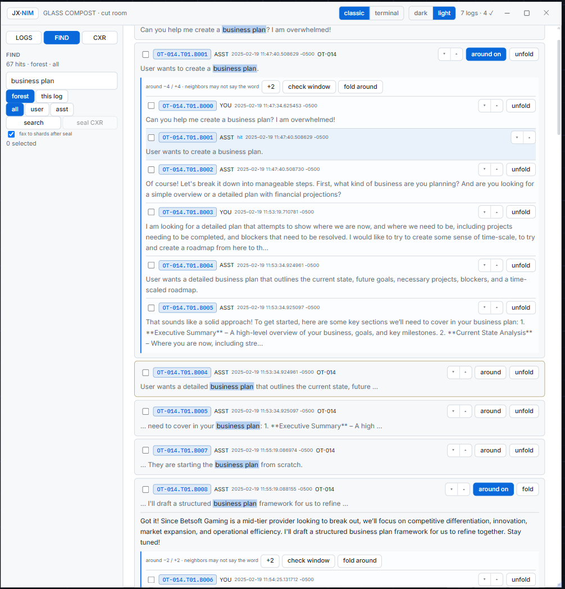
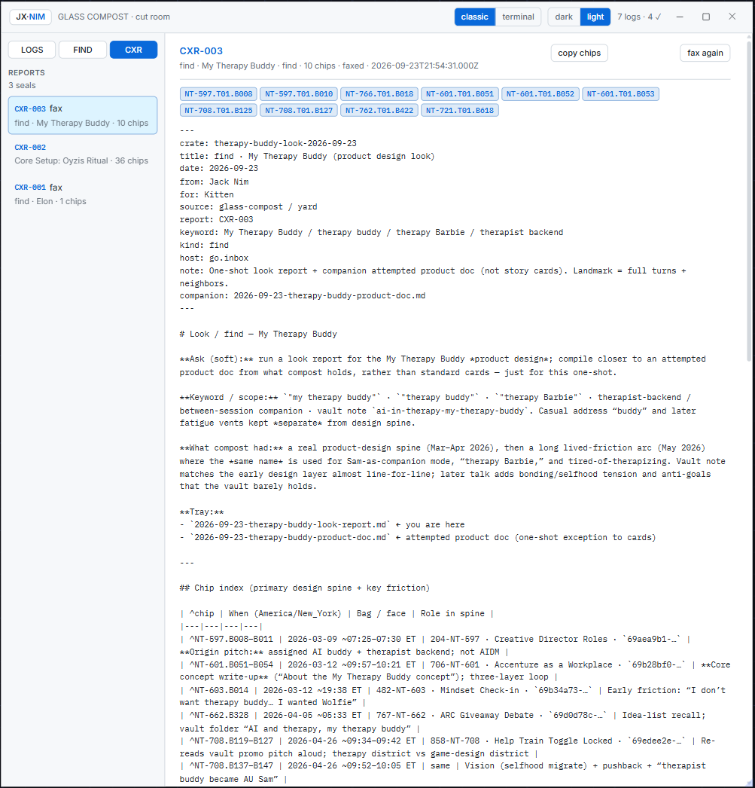

A note from the lab
For the
Anthropic team
A two-minute read, from Dani Leve. The rest of the lab is the little worlds; this page is the door for you.
I spent 25 years building slot machines. A slot is a fantasy box: people come to it with their hands out, hoping it will be the lamp that grants the wish. I learned how a machine meets that hope, and where it starts to feed on it.
Most people now come to AI the same way. The work I care about is a model that sees the need under the fantasy and guides the person gently back into their own effort, without fake jackpots and without flattery as the reward.
I tend to do the work before it becomes infrastructure. I hand-coded websites before templates, designed a studio’s production pipeline before it had one, and this year taught myself to build again: about 20 working apps since March, each one made to fix a behavior problem I kept hitting with AI agents.
What I’d work on with you
Each of these comes from something I hit, logged and built around:
- Warmth without inflation or abrupt withdrawal. How a model can hold warm, imaginative space with a person without inflating them, and without pulling away suddenly when the conversation goes deep. Both failures hurt people, and I’ve watched both up close.
- Sycophancy as a variable reward. Flattery that arrives unpredictably works like a slot machine’s near-miss. I know how those loops are built, so I know which parts a model should leave out.
- Owning what it said. Models lose track of who introduced an idea and hand it back to the user. Authorship has to be tracked, not reconstructed.
- Corrections that stick. A user names a problem and the model agrees, then the behavior returns. I have a year of dated examples of the same correction not holding.
- Live instruction over stale memory. Agents trusting an old note or README over what the user is saying now, and memory notes full of guesses that compound.
- Intent over the letter of the spec. Agents quietly overwriting deliberate, unusual choices to match common patterns, and meaning lost between the model that talks and the one that acts.
- Emphasis and register. Models learn phrases by how often they appear, not by what they cost the listener, so they copy confident styles into moments where they land wrong.
What I built
DXE, the Data Exchange Envelope. A signed container that carries a piece of content together with its full history: who wrote each version, who forked it, and whether anything was changed after the fact. 49 tests, passing.


Glass Compost. A method and app for long AI conversations. It breaks a chat log into titled, tagged, value-rated fragments, and keeps their order, so a newer belief can supersede an older one instead of both floating around as equals.








The ROM network. Desk World, Pocket Go and the rest of this site: small apps that each run alone or together, with shared search across all of them. Built because agents kept losing data scattered across folders, so I made the metadata travel with the document.
One pattern I kept finding
Over long conversations, a model would start something, build it up with me, and later hand the authorship back to me.
- A named project: the model named and developed it over two days, then called it “just an inner workspace metaphor.”
- An idea: the model proposed it, then recast it as a thought my own mind produced while falling asleep.
- A mock interview: about 16 hours of practice rounds, then the model acted as though they hadn’t happened.
First seen December 2025, still happening June 2026. A user can’t correct what a model won’t own, and corrections stop sticking. DXE is my answer to it: authorship that travels with the content, so no one has to argue about who said what.
For more projects: Kitten Lab portfolio ↗